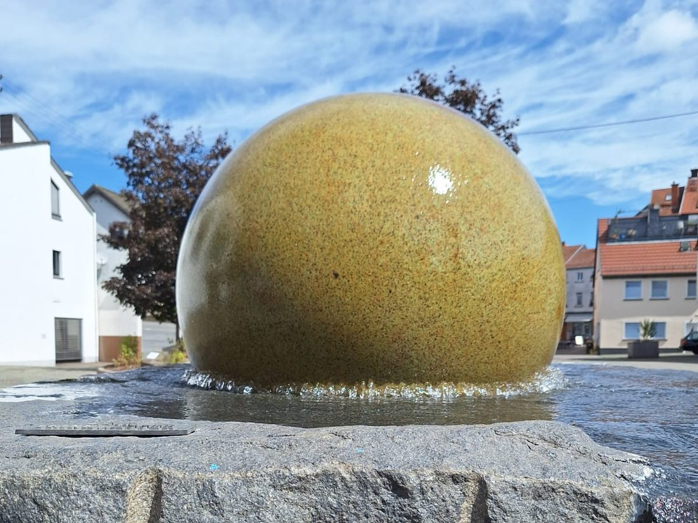

Keramik bemalen in St. Wendel
Rohling aussuchen, Pinsel schnappen, drauflosmalen — den Rest (Glasur & Brand) übernehmen wir. Nach etwa zwei Wochen holst du dein fertiges Unikat ab.
ganz entspannt
Tasse, Teller, Vase oder Figur — such dir dein Stück aus dem Regal aus.
Farben, Pinsel, Stempel & Schablonen liegen bereit — wir helfen bei Ideen.
Glasur & Brand übernehmen wir — dadurch wird alles glänzend und alltagstauglich.
Nach ca. zwei Wochen ist dein Unikat fertig — lebensmittelecht glasiert und mit etwas Handwäsche lange schön.
gemeinsam kreativ
2 Stunden malen, lachen, Spaß haben — und jedes Kind nimmt sein eigenes Kunstwerk mit nach Hause.
ab 9 Jahren
Termin anfragen →Der etwas andere Abend: Musik, ein Glas Prosecco, gute Gespräche — und am Ende ein selbst bemaltes Andenken.
Termin anfragen →Kreativ statt Konferenzraum — für Gruppen reservieren wir euch gern das ganze Studio, auf Wunsch mit Aperitif, Wein oder Prosecco.
Termin anfragen →Plätze sind begrenzt
Such dir online Tag und Uhrzeit aus. Dauert eine Minute, und dein Tisch steht bereit. Für Kindergeburtstage, JGA und größere Gruppen meldet euch am besten direkt bei uns.
Jetzt Tisch reservieren ↗✎ Demo: Der Button führt später direkt zu eurer Shore-Buchungsseite
Lieber telefonisch? Ruf uns einfach an: 06851 / 000 000
komm vorbei
📍Grabenstraße 19 · 66606 St. Wendel
Route planen ↗
📞06851 / 000 000
Folgt uns auf Instagram: @eckstueck_

Du findest uns mitten
in der Fußgängerzone
nur ein paar Schritte vom Kugelbrunnen ✦
Karte bei Google Maps öffnen ↗gut zu wissen
Nach dem Bemalen glasieren und brennen wir dein Stück im Studio. Nach etwa zwei Wochen kannst du dein fertiges Lieblingsstück abholen. Ein Tipp zur Pflege: von Hand spülen statt in der Spülmaschine, so bleiben die Farben lange leuchtend.
Zum freien Malen dürfen alle mitkommen, kleine Künstler in Begleitung eines Erwachsenen. Kindergeburtstage feiern wir ab 9 Jahren, da klappt das Bemalen selbstständig am besten.
Unsere Plätze sind begrenzt, daher berechnen wir für eine Begleitperson einen Unkostenbeitrag von 10,00 €.
Klar — bei uns malst du mit Café-Gefühl: Kaffee, Kakao und Kaltgetränke gibt es direkt am Maltisch, abends auch ein Glas Wein, Prosecco oder ein Bier dazu. Einfach ankommen, aussuchen, losmalen.
noch eine Frage? Ruf uns einfach an: 06851 / 000 000 ✦